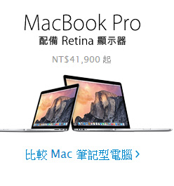

今天的蘋果發表會中創下了三個第一的記錄：第一場有中文即時口譯的發表會、第一場送全球 iTunes 客戶新專輯的發表會，以及第一場連線狀況爛到無以復加的記者會。如果有一天有人問起今天的網路狀況有多糟，我想我會說：「嗯，就像 2014 年 9 月 9 日的蘋果發表會一樣糟。」
從 iPhone 5 開始，或者說，從 Tim Cook 上任開始，蘋果的保密協定幾乎已經成為洩密協定，然而這次有點出人意料的是，蘋果似乎故意要轉移大家的焦點，給了林志穎 iPhone 6 卻不給他 Apple Watch，這會不會讓林志穎一怒之下決定從此守口如瓶開始幫蘋果保密呢？讓我們繼續看下去。
雖然不能算破天荒，但也可以說是少見的在發表會中一開始就直接講產品，發表會一開始，在簡短的影片後，Tim Cook 隨即宣佈新 iPhone 登場。蘋果表示，所有的交易都是透過手機中新增的「安全元件」進行，每筆交易都只會使用到一筆一次性的交易安全碼，裡面不含任何信用卡以及你個人的資訊，只是單純交易成功的認證碼，大家不用擔心這些資料會回傳到蘋果的伺服器上。
Apple Pay 同時也可應用在線上交易，在任何支援 Apple Pay 的應用程式裡購物，將不再需要輸入長串的個人資訊，只要按下 Apple Pay 按鍵，就會自動帶入預先設定好的資料，完成 Touch ID 認證即可完成交易。如果手機遺失，也只要透過 Find My iPhone 功能，就可將記錄在 Passbook 中的信用卡與金融卡止付。 Apple Pay 將在今年 10 月起於美國優先啟用，合作的發卡單位為美國運通、VISA 與 MASTER，預計在 2015 年起推廣到全球更多國家使用，有了信用卡組織在背後撐腰，相信很快就會普遍起來。為了表示 Apple Pay 有多簡單方便， Tim Cook 還特別播放了兩次影片。
不知道日本媒體在看到這個在日本已經用了不知道多久的技術，居然讓 Tim Cook 如此欣喜若狂時會不會感到欣慰。 無 32GB 規格 整體來說，這次的發表會在 iPhone 6 與 iPhone 6 Plus 上的著墨並不算太多，整體功能除了 Apple Pay 之外也沒有太多新意，不論硬體設計、規格或是功能，都毫無驚喜，就只是隻新 iPhone。在售價的部份，iPhone 6 與 iPhone 6 Plus 都不再提供 32GB 容量，改為 16、64 及 128GB 三種規格，售價分別為：iPhone 6 199/299/399美金、iPhone 6 Plus 299/399/499美金。舊機型的售價部份，iPhone 5s 將提供 16 與 32GB 兩種規格，售價分別是 99 與 149 美金。而 iPhone 5c 則僅提供 8GB 容量，綁約價免費。
沒有藍寶石，沒有藍寶石，沒有藍寶石，因為真的沒有所以講三次。謠傳給「行動裝置」使用的藍寶石玻璃看起來應該是給 Apple Watch 使用，所以並不是坊間流傳只有 5.5 吋用藍寶石螢幕 4.7 吋用一般玻璃，而是通通不用藍寶石。兩款 iPhone 同時採用新的 RETINA HD 顯示器，解析度分別為 1334 X 750（326 PPI）與 1920 X 1080（401 PPI）。新的 RETINA HD 顯示器也讓 iPhone 6 與 iPhone 6 Plus 在陽光下的可視度更好，同時也能呈現更黑更銳利的文字效果。另外 iPhone 6 與 iPhone 6 Plus 也搭載了全新的「螢幕縮放」功能，可以讓所有內容顯示變得更大，其中 iPhone 6 Plus 還有新的橫向檢視模式，提供全新的操作體驗。
單手操作的方便性一直以來都是蘋果最注重的使用體驗，這次因應更大尺寸的 iPhone 6 ，蘋果也開發了新的「螢幕上方觸控」功能，在任何應用程式中只要連按 Home 鍵兩下，就可以將整個螢幕內容下移，更貼近單手可用大姆指操作的位置。電源/睡眠/喚醒功能鍵，現在也移到了手機的右側，音量控制鍵也改成長條型設計，更方便操作。
iPhone 6 與 iPhone 6 Plus 再度變更設計，回到第一代 iPhone 與 iPhone 3G/3Gs 的圓弧設計，但是在背面的因應天線收訊的阻斷設計，卻不禁讓人連想到 HTC 的設計元素，採用陽極處理的鋁、不鏽鋼與玻璃打造，iPhone 6 與 iPhone 6 Plus 分別達到 6.9mm 與 7.1mm 的薄度，是有史以來最薄的 iPhone。 捨棄了 iPhone 5 的鑽石切邊方式，iPhone 6 與 iPhone 6 Plus 的圓滑邊緣在手掌抓握時的舒適度也更好，但相較之下，過去引以為傲的設計辨識度卻降低了不少，裝上保護殼或皮套，如果不說是 iPhone 可能沒人知道，其他人看到可能還會問說：「為什麼 HTC 的手機可以這麼像 iPhone ？快告訴我你怎麼辦到的！」
全新的 64位元架構 A8 處理器與 M8 動作感應協同處理器，讓 iPhone 6 與 iPhone 6 Plus 擁有比 iPhone 5s 更快速的處理效能，讓 CPU 速度高達 50 倍，GPU 速度更是高達 84 倍。另外，A8 處理器採用 20 奈米製造，能源效率比起 A7 也提升了 50%。 透過與 M8 處理器的合作，現在加速感應器與陀螺儀的偵測會更加準確，記錄數據也會更精準，加上新加入的氣壓感應器，讓 iPhone 6 與 iPhone 6 Plus 除了偵測速度和距離外，現在也可偵測你所在的海拔高度。
相機的部份，這次在鏡頭設計上和過去也有重大的改變，它凸出來了。這可能意味著 iPhone 5s 的鏡頭設計已經是機身所能容納的極限，這次為了更強大的畫質與功能，只能犧牲相機模組的大小，讓它把頭露出來。同樣採用五片鏡片組的結構，但光圈來到 F/2.2（iPhone 5s 為 F/2.4），畫素依然維持在 800 萬，搭載了新的 Focus Pixel 影像訊號處理器，提供更強的臉部偵測、連續自動對焦錄影、1080p 每秒 30 或 60 FPS 錄影，以及每秒 120 或 240 FPS 慢動作錄影等功能。在前鏡頭的部份同樣是 120 萬畫素，但新增了連拍模式，以及與主相機相同的曝光控制功能，另外還可拍攝自動 HDR 影片，以及定時快門功能。
除了早就看膩的外型，以及耳熟能詳的規格，蘋果難得一見向產業主流妥協，在 iPhone 6 與 iPhone 6 Plus 中加入了 NFC 功能，但在發表會中只有提到與 Apple Pay 綁定的行動支付功能，並未提到與其他 NFC 週邊連線的部份。Apple Pay 嚴格說起來是之前看起來沒什麼用的 Passbook 的升級版，使用者使用手機鏡頭將信用卡、VISA 或 MASTER 金融卡拍照後，帶著卡片和手機前往銀行辦理認證，認證通過之後這個卡就會被存入 Passbook 當中，日後要使用這些卡片付費時，只要從 Passbook 裡找到要用的卡，將手指放在 Touch ID 感應器上，把手機往感應機那裡一伸，就完成了支付的動作。整個交易過程中店員不會接觸到你的信用卡，也無法得知任何與你的信用卡有關的訊息。
蘋果表示，所有的交易都是透過手機中新增的「安全元件」進行，每筆交易都只會使用到一筆一次性的交易安全碼，裡面不含任何信用卡以及你個人的資訊，只是單純交易成功的認證碼，大家不用擔心這些資料會回傳到蘋果的伺服器上。Apple Pay 同時也可應用在線上交易，在任何支援 Apple Pay 的應用程式裡購物，將不再需要輸入長串的個人資訊，只要按下 Apple Pay 按鍵，就會自動帶入預先設定好的資料，完成 Touch ID 認證即可完成交易。如果手機遺失，也只要透過 Find My iPhone 功能，就可將記錄在 Passbook 中的信用卡與金融卡止付。
Apple Pay 將在今年 10 月起於美國優先啟用，合作的發卡單位為美國運通、VISA 與 MASTER，預計在 2015 年起推廣到全球更多國家使用，有了信用卡組織在背後撐腰，相信很快就會普遍起來。為了表示 Apple Pay 有多簡單方便， Tim Cook 還特別播放了兩次影片。不知道日本媒體在看到這個在日本已經用了不知道多久的技術，居然讓 Tim Cook 如此欣喜若狂時會不會感到欣慰。